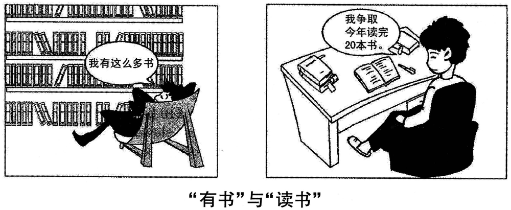

A小作文 · 给新到的澳大利亚教授写邮件，推荐本市景点并说明理由（10 分）
You are to write an email to James Cook, a newly-arrived Australian professor, recommending some tourist attractions in your city. Please give reasons for your recommendation.
You should write neatly on the ANSWER SHEET.
Do not sign your own name at the end of the email. Use “Li Ming” instead.
Do not write the address. (10 points)
💭 审题三件事
- ⭐⭐ 推荐信的分数在「理由」，而理由必须回答「为什么推荐给他」。「历史悠久、风景优美」对谁都成立——换成写给一个北京同学也一字不用改，就是没对准读者。拿三个修饰语去筛：newly-arrived ⟹ 他不认路：离学校多远、怎么去、什么时候去；Australian ⟹ 推他在家乡少见的——几百年的老街巷、青铜器；professor ⟹ 博物馆比游乐园对路，语气要敬。
- ⭐⭐ 推两处就够，别报菜名。一百词里每处只有 35–40 词，要装下「名字 ＋ 一句它是什么 ＋ 一条理由 ＋ 怎么去」。两处最好类型不同（一处室外老城、一处室内博物馆），理由各挂一个修饰语，不重复。报五个景点、每个一句「very beautiful」＝要点在、理由没有。
- 城市可以不点名、景点可以虚构，但要编得像：写 our city、the Old Town、the Provincial Museum 最稳；点了真城市就得保证事实对（写「故宫周一闭馆」没把握就别写）。末句给一个具体提议——「这周六我带您去老城走走」：推荐信收在行动上（2011 页的 Shall we watch it together this weekend? 同理），而对新来的人，「我陪您」本身就是一条理由。
⭐⭐ 十二年 Part A：2017 ＝ 2011／2015 的体裁 × 2013 的读者
| 年份 | 体裁 | 读者是谁 | 第一句怎么起 | 落款 | 本年特有的坑 |
|---|---|---|---|---|---|
| 2007 | 建议信 | 校图书馆（机构） | I am writing to put forward several suggestions … | Li Ming | 建议只有口号没有可执行动作；写成投诉信 |
| 2008 | 道歉信 | 具名熟人 Bob | I am writing to apologize for … | Li Ming | 只道歉不给方案；方案没有「动作＋方式＋时间」 |
| 2009 | 致编辑信 | 报社编辑 | I am writing to express my concern about … | Li Ming | 建议里没有一条是编辑自己能办的 |
| 2010 | 通知 NOTICE （招募） | 一群人（无称呼） | Volunteers are needed for … | 机构名 | 写 Dear ＝ 体裁错；落款签 Li Ming |
| 2011 | 推荐信 · 荐物 | 未具名的一个朋友 | How have you been? I am writing to recommend … | Li Ming | 写成影评／剧透结局；通篇只有「我」没有「你」 |
| 2012 | 欢迎邮件 （以组织名义） | 一群国际学生 但仍是书信 | On behalf of the Students’ Union, I would like to extend a warm welcome to … | Li Ming ＋ Students’ Union | 按 2010 的手感写成通知；通篇 I 没有 we |
| 2013 | 邀请邮件 | 本校外教 | As chair of the English Club, I am writing to invite you to … | Li Ming | 只邀请、不交代工作量；没给答复期限 |
| 2014 | 建议信（撞 2007） | 本校校长 | As a third-year student, I am writing to suggest … | Li Ming | 建议写成对学生的劝告；用 should 下指令 |
| 2015 | 荐书邮件（撞 2011） | 读书会的一群会员 | As host of next Friday’s reading session, I would like to recommend … | Li Ming | 理由不对着读书会用途；剧透 |
| 2016 | 通知 NOTICE （告知 · 撞 2010） | 刚入学的国际学生（撞 2012） | Welcome to the University Library! To help all newly-enrolled international students … | Li Ming | 按 2012 写成欢迎信；信息写成广告 |
| 2017 本题 | 推荐邮件 · 荐地方 （撞 2011／2015） | 具名的新到外籍教授（撞 2013 的外教） | Welcome to our city! Now that you have settled in, I would like to recommend … | Li Ming | ⭐ 理由对谁都成立（历史悠久、风景优美）；推他家门口就有的（海滩）；Dear James；报菜名式列五处 |
| 2022 | 邀请邮件 | 英国大学的教授 | On behalf of …, I am writing to invite you to … | Li Ming | 漏时间/地点/事由 |
- ⭐⭐ 2014 回到 2007 · 2015 回到 2011 · 2016 拼了 2010 的体裁 × 2012 的读者 · 2017 又拼：体裁取 2011／2015 的推荐信，读者取 2013 的「本校外教」（2022 的读者也是外国教授）。⟹ 押体裁、押读者都没用，第五次验证；有用的仍是那四问：体裁词 · 读者（他们拿它做什么）· 以谁的名义 · Do not sign 后面跟的是什么。
- ⭐⭐ 「读者修饰语当筛子」是 2016 页刚立的判据，2017 立刻加码：2016 两个修饰语（newly-enrolled × international），2017 三个（newly-arrived × Australian × professor）。⟹ 题干给读者挂几个修饰语，理由就该对准几个——不必一条理由对一个，但每个修饰语至少要在全文某处被回应。
- ⭐ 第一次给读者一个完整的姓名：2008 的 Bob 只有名，2017 是 James Cook（名 ＋ 姓）＋ professor（头衔） ⟹ 称呼一步到位：Dear Professor Cook。
⭐⭐ 三封推荐信并排：2011 · 2015 · 2017（本页新增）
骨架一样（荐什么 → 为什么 → 一个行动），三年各换一个变量：荐的东西、读者人数、读者跟你的关系。
| 对照项 | 2011 · 荐电影 | 2015 · 荐书 | 2017 · 荐景点 |
|---|---|---|---|
| 荐给谁 | 一个朋友 | 读书会的一群会员 | ⭐ 一位刚到的外籍教授 |
| 荐几样 | one of your favorite movies（一部） | a book（一本） | ⭐ some tourist attractions（至少两处） |
| 理由挂在哪 | 朋友的口味、你们一起看 | 读书会要讨论 ⟹ 书值得讨论 | ⭐⭐ 读者的三个修饰语：刚到 · 澳大利亚 · 教授 |
| 称呼 | Dear ＋ 自起名 | Dear fellow members | Dear Professor Cook |
| 语域 | 随意（How have you been?） | 半正式 | ⭐ 正式偏敬：would like to · I would be glad to · 不用缩写 |
| 最容易写砸的地方 | 写成影评、剧透 | 理由不对着读书会 | ⭐ 写成导游词：年代、面积、门票一大串，却没有一句「为什么是您」 |
| 收尾 | Shall we watch it together? | 带着一个问题来 | ⭐ 我陪您去（对新来的人，陪同本身就是理由） |
⚠️ Directions 限定词清算表（开考先圈出来）
| 限定词 | 它约束什么 | 违反的后果 |
|---|---|---|
| an email … the end of the email | 书信：称呼 ＋ 正文 ＋ 敬语 ＋ 落款 | 写成景点介绍的短文、没有称呼 ⟹ 体裁错 |
| to James Cook, a … professor | ⭐ 称呼 Dear Professor Cook；语气正式偏敬 | Dear James / Dear Professor James / Hi! ⟹ 格式与语域一起丢分 |
| newly-arrived | ⭐ 他不认路 ⟹ 多远、怎么去、何时去；可以提议陪同 | 只写景点多好，他读完仍不知道怎么去 |
| Australian | ⭐⭐ 推他在家乡少见的东西（几百年的街巷、中国的青铜器、本地的食物） | 推海滩、海洋馆、野生动物园——他家门口就有；⚠️ 或写成「澳大利亚历史很短」——冒犯读者，而且原住民文化有数万年 |
| recommending some tourist attractions | 复数 ⟹ 至少两处 | 只推一处 ⟹ 要点不全；推五处以上 ⟹ 每处只剩一句空话 |
| … in your city | ⭐ 只能推本市的 | 推长城、桂林山水（除非你写的就是北京、桂林） |
| Please give reasons for your recommendation | ⭐⭐ 每处一条理由，理由要对准读者 | 理由写成「历史悠久、风景优美」——换谁读都成立 |
| （本年没有 about 100 words） | ⚠️ 十一年里第一次不写字数 ⟹ 仍按大纲约 100 词：95–115 | 以为不限字数，写到 180 词挤占大作文时间 |
| Do not sign … Use “Li Ming” instead Do not write the address | 落款 Li Ming；不写地址 | 签真名有判零风险；把学校地址写进落款 |
🧩 三道筛子：该推什么、理由写什么（本页新增）
2016 页的「两道筛子」本年变成三道：刚到的人用得上吗？澳大利亚人新鲜吗？教授感兴趣吗？过得越多越值钱，一道都不过的删掉。
| 候选景点 ／ 理由 | 刚到 | 澳洲 | 教授 | 写不写 · 本文写成了哪一句 |
|---|---|---|---|---|
| ⭐⭐ 老城：五百年的街巷，仍有人住、有人做生意 | ✅ | ✅✅ | ✅ | The Old Town is not a relic of the past but a living neighborhood: its five-hundred-year-old lanes are still full of tea houses and families. |
| ⭐⭐ 博物馆：青铜器 ＋ 英文导览 ＋ 离学校三站 | ✅✅ | ✅ | ✅✅ | … just three subway stops from campus. Its bronze collection is among the finest in China, and free tours are given in English … |
| ⭐ 我陪您去 | ✅✅ | — | — | If you like, I would be glad to show you around the Old Town this Saturday. |
| 夜市小吃街 | ✅ | ✅ | △ | 备选：可替换博物馆，理由写「一晚尝遍本地菜，也是认识城市的最快方式」 |
| 海滩、海洋馆、野生动物园 | ✅ | ✗ | — | ❌ 不推：澳大利亚最不缺的就是这些 |
| 游乐园、酒吧街、购物中心 | △ | ✗ | ✗ | ❌ 不推：对教授不对路，也不是「本市特有」 |
| 「历史悠久、风景优美、闻名全国」 | ✗ | ✗ | ✗ | ❌ 不写：这不是理由，是形容词——三道筛子一道都没过 |
- ⭐ 考场上没人核对你的城市有没有老城——景点可以虚构，但要合常理：五百年的老街、全国一流的青铜器馆、地铁三站——别写「世界最大」「全球唯一」。
- ⭐ 不点名城市最稳：写 our city；点了北京就得写对（故宫在哪、周几闭馆）——事实错比不写更扣印象分。
- ⭐ James Cook 与 1770 年抵达澳大利亚东海岸的库克船长同名——命题人大概只是取了个耳熟的英文名。考场上别拿这个开玩笑（「您和那位船长同名」），对一位初次通信的教授不得体。
✍️ 范文（ 词 · 🟡 亮点点击看讲解）
Dear Professor Cook,
欢迎 ＋ 目的Welcome to our city! Now that you have settled in, I would like to recommend two places for your first free weekend.
第一处 ＋ 理由The Old Town is not a relic of the past but a living neighborhood: its five-hundred-year-old lanes are still full of tea houses and families. It offers a kind of everyday history that is hard to find in Australia.
第二处 ＋ 理由The Provincial Museum, just three subway stops from campus, is my second choice. Its bronze collection is among the finest in China, and free tours are given in English every morning.
一个提议If you like, I would be glad to show you around the Old Town this Saturday. Just let me know.
Yours sincerely,
Li Ming
欢迎来到我们的城市！您既然已经安顿下来，我想为您的第一个空闲周末推荐两个地方。
老城不是过去的遗物，而是一片活着的街区：那些五百年的老巷子里至今满是茶馆和人家。它能让您看到一种在澳大利亚很难见到的、融在日常里的历史。
我推荐的第二处是省博物馆，离学校只有三站地铁。馆里的青铜器收藏在国内首屈一指，每天上午都有免费的英文导览。
如果您愿意，我很乐意这周六陪您去老城转转。告诉我一声就好。
李明 敬上
- ⭐⭐ 要点理由对谁都成立：It has a long history and beautiful scenery. 换成写给本地同学一字不用改——题干给读者挂了三个修饰语，至少让每个修饰语在全文被回应一次：刚到（多远、我陪您）· 澳大利亚（家乡少见）· 教授（馆藏）。
- ⭐⭐ 要点推他家门口就有的：the beautiful beach / the ocean park。给一个澳大利亚人推海滩，理由再漂亮也没对准 Australian。
- ⭐ 要点只推一处（题干 some ＋ 复数 attractions）或报菜名推五处（每处只剩一句 very famous）。两处，各一条理由最稳。
- ⭐ 要点写成导游词：建于哪年、占地几公顷、门票几元。这些是信息不是理由——理由回答的是「为什么值得您去」。
- ⭐ 称呼❌ Dear James · ❌ Dear Professor James · ❌ Dear Mr. Cook · ❌ Hi James! ⟹ ✅ Dear Professor Cook,（头衔 ＋ 姓）。
- ⚠️ 冒犯拿澳大利亚垫背：Australia has a short history, so … ⟹ 既不得体、也不对（原住民文化有数万年）。本文只说 hard to find in Australia，说的是「难得见到」，不是「澳大利亚没有」。
- 语言❌ recommend you to visit ⟹ ✅ recommend (that) you visit ／ recommend visiting · ❌ scenic spots（中式、偏旧） ⟹ ✅ attractions ／ sights ／ places · ❌ Welcome you to our city ⟹ ✅ Welcome to our city!
- 字数本年 Directions 没写字数，照大纲约 100 词：95–115 最稳。本文 词（不含称呼与落款）。
- ⭐ 第一句欢迎、第二句目的：Welcome to our city! Now that you have settled in, …——Now that 既交代时机（您安顿好了），又回应了 newly-arrived；推荐信第一句不必写 I am writing to …，欢迎语更自然。
- ⭐ 先说「两处」：I would like to recommend two places for your first free weekend.——数字先亮，读者知道后面有两块；first free weekend 又一次对准「刚到」。
- ⭐⭐⭐ 第一处借 2017 T2 的句架：Hawaiian culture is not a relic of the past; it is a living culture … ⟹ The Old Town is not a relic of the past but a living neighborhood——not A but B 先打掉「老城＝古迹」的刻板印象，理由就从「古老」升级成「活着」。
- ⭐⭐ 对准 Australian 的那一句：It offers a kind of everyday history that is hard to find in Australia.——everyday history（融在日常里的历史）＝ 五百年的街巷里还住着人、开着茶馆；hard to find 是「难得」，不是「没有」——分寸就在这两个词上。
- ⭐⭐ 第二处一句话挂三个修饰语：just three subway stops from campus（刚到 ⟹ 怎么去）· Its bronze collection is among the finest in China（教授 ⟹ 值得看）· free tours are given in English（外国人 ⟹ 看得懂）。among the finest 不说「最好」，留余地。
- ⭐ 收在一个能答应的提议：If you like, I would be glad to show you around the Old Town this Saturday. Just let me know.——If you like 把主动权交给教授；show sb around ＝ 带某人参观；Just let me know 让回复变得容易。
- 敬语 Yours sincerely：对教授用它最稳；Best wishes 也可以，Love／Cheers 不行。
B大作文 · 图画作文（20 分）
Write an essay of 160–200 words based on the following pictures. In your essay, you should
1) describe the pictures briefly,
2) interpret the meaning, and
3) give your comments.
You should write neatly on the ANSWER SHEET. (20 points)

- 两格，没有分格标签；每格一个对话框（2016 只有左格有字，本年两格都说话）。
- 左格：一整面书架，四层塞满，有几本歪斜着。一个年轻人仰靠在一张帆布躺椅里，腿伸直、脸朝上、眼睛眯着，一副得意的样子。⚠️⚠️ 他背对着书架，手里一本书也没有。对话框：「我有这么多书」——没说多少本。
- 右格：另一个人（卷发、衣着不同——⚠️ 和左格不是同一个人）坐在书桌前的扶手椅里，穿着拖鞋。桌上一本书摊开、旁边一支笔；左边一本厚书、右后方一本书都夹着书签。对话框：「我争取今年读完 20 本书。」——有数字、有期限、有句号。
- ⚠️ 右格的人此刻也没在盯着书看——他（她）是在说一个计划。能证明「读书正在进行」的是桌上的东西：摊开的书、笔、书签。⟹ 描图写 sits at a desk with an open book，别写 is reading intently（图上看不出）。
- 图下方图注：「“有书”与“读书”」——两个动宾短语各带一对引号，宾语都是「书」，只差一个动词。Directions 与 2016 完全相同（复数 pictures · the meaning · give your comments）。
- 性别画得不明确（左格常被写成 a young man，右格有人写 a girl）：阅卷不因此扣分；本文左格用 a young man，右格用 another reader——⭐ 顺手让「reader」这个词只属于右格。
💭 审题：图注只差一个字——你要写的是两句话的「公约数」和那个被换掉的动词
- 先看到对比：左边有一墙书却不读，右边在读 ⟹ 读书比藏书重要、书买了要读。这一步人人都能看到，照着写只够三档。
- ⭐⭐⭐ 再拿两个对话框互相核对——找它们的公约数。「我有这么多书」「我争取今年读完 20 本书」：两个人都在报数。⟹ 右格没有反对「数书」，它换了一样东西来数：左格数架上有几本（而且数不清，只能说「这么多」），右格数读完了几本（精确到 20、限定在今年）。不变项是「数」，变量是「数什么」——这就是第二段的第一句。
- ⭐⭐ 再看最反常处：左格的人背对着书架。他离书最近，却一眼不看；右格桌上只有几本书，本本都在用（摊开、夹书签、配着笔）。⟹ 书多的那个其实没有书，书少的那个才真正「有」书。回到图注：「有」和「读」只差一个字，而真正的「有」只能靠「读」得到——这是第三段的最后一句。⟹ 第二段三步：① 两人都在数 → ② 数的东西不同（藏量 vs 读完量；模糊 vs 精确）→ ③ 一个动词之差 ＝ 藏书与学问之差。
- 「我有这么多书」✅ “I have so many books!”（感叹语气用叹号，原图无标点，加叹号更贴「得意」）。❌ “I have so much books.”（books 可数，用 many）。
- 「我争取今年读完 20 本书。」✅ “I will try to finish twenty books this year.” ／ “I aim to finish reading 20 books this year.”——⚠️ 「读完」＝ finish，不是 read over；「争取」＝ try to ／ aim to。❌ strive for reading 20 books · ❌ fight for（打仗式的争取）· ❌ read out 20 books（朗读！）。
- 「“有书”与“读书”」✅ “Owning Books” and “Reading Books” ／ Having Books vs. Reading Books。⚠️ 「有」译 own 比 have 准：have 太泛（have a book 也可以指手里拿着一本），own 专指「归我所有」——正是左格的意思。两个短语都用动名词，保住「只差一个动词」的结构。
📐 描图段三看（本图版 · 两格图要逐项对照着看）
| 看什么 | 本图看出来的 | 写进文章的哪一句 |
|---|---|---|
| ① 看图上的字 | 两个对话框（一个模糊的量、一个精确的量）＋ 图注（引号对举，只差一个动词） | boasting, “I have so many books!” … saying, “I will try to finish twenty books this year.” The caption reads: “Owning Books” and “Reading Books”. |
| ② 看最反常处 | ⭐⭐ 左格的人背对着书架、手里空着 | … his back to shelves packed with books … Not one is in his hands. |
| ③ 看桌上的东西 | ⭐ 右格书少，但每本都在用：摊开、配笔、夹书签 | … with an open book, a pen and two bookmarked volumes … |
⭐⭐ 两格图第三次：什么变了，什么没变（接 2014 · 2016）
2014 页定下「两格图先列变 / 不变，不变的那一项才是立足点」。2014 不变的是笑，2016 不变的是模仿；2017 不变的是「报数」——⚠️ 而且第一次两格不是同一批人。
| 看哪一项 | 左格 | 右格 | 说明什么 |
|---|---|---|---|
| ⚠️ 人 | 刺头发、深色衣服 | 卷发、另一身衣服 | 变——不是同一个人 ⟹ 这是对照图，不是变化图：不许写「后来他醒悟了」 |
| 姿势 | 仰靠在躺椅里、腿伸直、脸朝上 | 坐在书桌前、脸朝桌面 | 变——从「躺着」到「坐着」 |
| ⭐⭐ 人和书的朝向 | 背对书架 | 面对摊开的书 | 变——关系从背对到面对：左格最反常的一笔 |
| 书的数量 | 一整面墙（四层） | 桌上四五本 | 变——书少了 |
| ⭐⭐ 书的状态 | 全立在架上，一本不在手 | 一本摊开、配着笔，两本夹书签 | 变——从「摆着」到「用着」：书签是读过的痕迹 |
| ⭐⭐⭐ 对话框在干什么 | 报一个数（这么多） | 报一个数（20 本） | 不变——两个人都在数 ⟹ 第二段第一句：右格没有反对数，换了一样东西来数 |
| 数的精度 | 模糊：「这么多」 | 精确：「20 本」＋「今年」 | 变——数不清 vs 数得清：只有真在做的事才数得清 |
| 说话的方向 | 「我有」——已经拥有的状态 | 「我争取……读完」——要去完成的动作 | 变——炫耀过去 vs 计划将来 |
- ⭐⭐ 2014「相携」：同一对母女、隔着三十年，不变的是笑 ⟹ 不变项撑起主题。
- ⭐⭐ 2016「做个榜样」：同一对父子、前后两种做法，不变的是儿子在模仿 ⟹ 不变项撑起机制。
- ⭐⭐⭐ 2017「有书与读书」：两个不同的人，不变的是都在报数 ⟹ 不变项撑起题眼：差别不在数不数，在数什么。
- ⚠️⚠️ 新增一问：两格是不是同一个人？2014、2016 是同一批人，所以可以写「变化」（三十年后、后来父亲改了）；2017 发型衣着都不同，只能写「对照」（one … another / the first … the second）。先判这一条，再列变与不变——判错了，第一段就会编出一个图上没有的故事。
🧩 图上字的语法结构，决定文章的论证结构（十型扩到十一型：新增「一字之差的动宾对举」）
| 年份 | 图上的字是什么结构 | 文章就得怎么搭 |
|---|---|---|
| 2007 | 无字，只有两个想象气泡 | 靠对比两个气泡立意 |
| 2008 | 因果句：你一条腿，我一条腿；你我一起，走南闯北 | 顺着因果推。单线论证 |
| 2009 | 对举短语（同一主语 ＋ 两个形容词）：网络的“近”与“远” | 两边都写，还要回答为什么同一个东西既近又远 |
| 2010 | 比喻式判断句：文化“火锅”：既美味又营养 | 先解喻，再分别落实两个并列谓语 |
| 2011 | 引号双关式短语：旅程之“余” | 破字 → 对照句 → 指认施动者 |
| 2012 | 两句对白：全完了！／幸好还剩点儿。 | 转述 → 拿画面核对真假 → 看手 |
| 2013 | 一词图注 ＋ 并列标签：选择 ／ 求职·考研·出国·创业 | 全译 → 不排座次 → 追问谁来选 |
| 2014 | 两格时间标签 ＋ 一词图注：三十年前…… ／ 现在…… ／ 相携 | 两格同构描 → 列变与不变 → 在两格之间解图注 |
| 2015 | 偏正短语：手机时代的聚会 | 写中心语，拆开看哪一半还在，矛头别指定语 |
| 2016 | 取舍复句：与其只提要求，不如做个榜样 | 两分句各配一格 → 第二段写机制 → 第三段解限定副词「只」 |
| 2017 本题 | 一字之差的动宾对举（同一宾语 ＋ 两个动词）：“有书”与“读书” | ⭐ 三步走：① 两个短语各配一格，两个对话框一起译；② ⭐⭐ 第二段盯住被换掉的那个动词——宾语是同一个「书」，差别全在人与书的关系上；③ ⭐⭐ 第三段把两个动词收拢：真正的「有」要靠「读」 |
| 2022 | 对话：两名学生就要不要听讲座的两句话 | 转述两句对话并选边站 |
- ⭐⭐ 先看两半共用的是什么：2009「网络的“近”与“远”」共用主语（网络）、换形容词 ⟹ 写同一个东西的两种性质，第二段回答「为什么同时近又远」；2017「“有书”与“读书”」共用宾语（书）、换动词 ⟹ 写同一样东西的两种用法，第二段回答「差的那一个动作到底差在哪」。
- ⭐⭐ 再看两半是并存还是取舍：2009 的近与远两头都真（不许只写一半）；2017 的有与读是一低一高——但不是一对一错：有书不是坏事，只有书才是。⟹ 第三段别骂买书（跑题④），要说的是「只有读过，才算有」。
| 年份 | 现成联想 | 回画面查一遍 | 结论 |
|---|---|---|---|
| 2009 | 蛛网 ⟹ 陷阱 | 图里没有蜘蛛 | ❌ 联想错 |
| 2010 | 火锅 ⟹ 熔炉 | 每块料都还保留形状和名字 | ❌ 联想错 |
| 2011 | 河脏 ⟹ 工厂排污 | 图上没有工厂 | ❌ 联想错 |
| 2012 | 半杯水 ⟹ 乐观 vs 悲观 | 瓶里确实还剩、两人确实相反 | ✅ 成立，但少了那只手 |
| 2013 | 岔路口 ⟹ 选对那条路 | 四条路没被标出对错 | ⚠️ 半成立：隐含前提找不到 |
| 2014 | 子女扶老人 ⟹ 反哺／报恩 | 母亲在自己走、在笑 | ⚠️ 半成立：程度过了量 |
| 2015 | 低头族 ⟹ 手机有害 | 没有一个人痛苦，两个在笑 | ⚠️ 半成立：打错了靶 |
| 2016 | 「身教胜于言传 ⟹ 父母别说教」 | 右格要求还在，图注写的是「只」 | ✅ 成立，但删掉了「只」 |
| 2017 本题 | 书架 ＋ 读书 ⟹ 「读书重质不重量，别贪多」 | 右格报的正是一个数量目标（今年 20 本）；左格的毛病不是读得太多，是一本没读 | ⚠️ 半成立：误伤正面格——把右格也批了 |
- ⭐⭐ 规矩再补一句：现成联想写完，回头看它有没有把图里的正面人物一起否掉。「重质不重量」一出手，右格那个「20 本」的计划就成了靶子——文章前半夸右格、后半批右格，自相矛盾。
- ⭐ 九年这把尺子量出五种结果：错（2009–2011）· 成立但不够（2012 少一只手 · 2016 少一个字）· 半成立（2013 前提 · 2014 程度 · 2015 靶子）· 误伤正面格（2017）。动作始终只有一个：回画面，逐项查。
- ⭐ 另一句常被背进来的「书非借不能读也」（袁枚《黄生借书说》）可以用——它说的正是「有了反而不读」，与左格同构；但别顺着写成「所以要借书」，图上没有借。
✍️ 范文（ 词 · 🟡 亮点点击看讲解）
①描图In the first picture, a young man lounges in a deck chair, his back to shelves packed with books, boasting, “I have so many books!” Not one is in his hands. In the second, another reader sits at a desk with an open book, a pen and two bookmarked volumes, saying, “I will try to finish twenty books this year.” The caption reads: “Owning Books” and “Reading Books”.
②寓意Look closer, and both are counting. The first counts his shelves and cannot even name the number: “so many” is all he can say. The second counts what will pass through the mind, with a deadline attached. The captions differ by one verb, and that verb separates a collection from an education: books on a shelf add to a room; books that are read add to a person.
③评论Buying books has never been easier, and it is tempting to mistake a full shelf for a full mind. Yet a shelf, like GDP, measures things that do not matter and misses things that do. So count the right thing: before buying the next book, finish the last one. The only books we truly own are the ones we have read.
仔细看，两个人都在数数。第一个人数的是自己的书架，却连个数都说不出——「这么多」就是他能说的全部。第二个人数的是将要读进脑子里的书，而且定了期限。两个标题只差一个动词，而正是这个动词，把「藏书」和「学问」分开了：摆在架子上的书，只让房间更满；读过的书，才让人更充实。
买书从来没有像今天这样容易，人也就很容易把满满的书架当成满满的学问。可书架就像 GDP，量的是不要紧的东西，漏掉的是要紧的东西。所以要数对东西：买下一本之前，先读完上一本。我们真正拥有的书，只有读过的那些。
🔁 一图三写：同一幅图，第三段的三个版本
前两段一个字不动，只换第三段——按 Directions 第 3 条的动词选版本。点一下卡片可以高亮对照。
- ⭐⭐ 立意写成「重质不重量」：We should read carefully rather than read many books. 右格定的正是一个数量目标——这句话把图里的正面人物也否掉了。
- ⭐⭐ 描图编成一个人的故事：At first the young man only collected books; later he realized … 两格发型衣着都不同，不是同一个人——图上没有「后来」。
- ⭐⭐ 立意第二段只复述「有书不如读书」：图注已经把两个短语摆出来了，第二段要写「差在哪」：两人都在数，一个数架子、一个数读完的；一个数不清、一个有期限。
- ⭐ 描图漏译对话框，或只译图注。两个对话框里藏着全文的题眼（两个数），漏了就没得论；「读完」要译成 finish。
- ⭐ 描图漏了「背对书架」：只写 a young man is sitting in front of his books。他是背对着的——这是左格最反常的一笔，也是版本 C 末句的伏笔。
- ⭐ 描图把右格写成「正在专心读书」：图上右格的人是在说计划，读书的证据在桌上（摊开的书、笔、书签）。写 sits at a desk with an open book 最稳。
- 语言❌ so much books ⟹ ✅ so many books · ❌ read over twenty books（over 会被读成「超过」） ⟹ ✅ finish twenty books · ❌ Having books and reading books（小写、无引号） ⟹ ✅ “Owning Books” and “Reading Books”。
- 语气把左格的人骂成虚荣、懒惰：He is vain and lazy。他买书本身不是错——错在只买不读；骂人，第三段就只剩「我们要多读书」的口号。
- 字数160–200：185–198 最稳。本文 词。
- ⭐⭐ 「背对书架」写进一个独立主格：a young man lounges in a deck chair, his back to shelves packed with books——his back to … 省掉 with 和 being，四个词写完左格最反常的一笔；packed with ＝ 塞满。
- ⭐ 第一段就埋下题眼：Not one is in his hands.——六个词的短句，把「有」和「拿着」分开；第二段的 counting 从这里接。
- ⭐⭐ 右格叫 another reader：reader 这个词只给右格——左格的人有书，却不是读者。一个名词先替第二段站了队。
- ⭐ 右格只写桌上有什么：with an open book, a pen and two bookmarked volumes——书签是「读过」的物证；不写 is reading intently，不替图说它没画的。
- ⭐⭐⭐ 第二段第一句写公约数：Look closer, and both are counting.——祈使句 ＋ and（＝ If you look closer, …），与 2016 范文同一个开法；both 是全文自己看出来的那一点：右格没有反对数数。
- ⭐⭐ 数不清 vs 有期限：cannot even name the number: “so many” is all he can say ↔ with a deadline attached——把对话框里的「这么多」本身当证据：只有真在做的事，才数得清。
- ⭐⭐⭐ 一个动词之差：The captions differ by one verb, and that verb separates a collection from an education——把图注的结构（只差一个动词）直接说出来；collection ↔ education：藏书 vs 学问。
- ⭐⭐ 分号对句：books on a shelf add to a room; books that are read add to a person.——add to 用两次，只换 room ↔ person；on a shelf ↔ that are read 又一次「只差一个动作」。
- ⭐⭐ 借 2017 T3 原句：It measures things that do not matter and misses things that do. ⟹ a shelf, like GDP, measures things that do not matter and misses things that do——书架数册数、GDP 数产值，都是「只数得到的，数不到要紧的」；同卷阅读与作文同一个题眼。
- ⭐ So count the right thing：不是 stop counting——与第二段的 both are counting 接上，守住右格；冒号后给一件能照做的事（before buying the next book, finish the last one）。
- ⭐⭐⭐ 末句把「有」收回到「读」：The only books we truly own are the ones we have read.——own 回扣图注的 Owning：图注把有和读分开，末句说真正的有只能靠读。
03🩺 跑题诊断表（这幅图最容易滑向的五个方向）
读书是人人都背过一套的题——格言、调查数据、电子书之争，每一样都能整段倒出来。下面五条按「有多容易滑过去」排序，①②是本图特有的。
| 跑向 | 长什么样 | 为什么错 | 回到正轨的那一句 |
|---|---|---|---|
| ① 写成「重质不重量」 本图特有 | Reading is about quality, not quantity. We should not set a target of how many books to read … | ⚠️⚠️ 误伤右格：右格的「今年 20 本」就是一个数量目标；左格的毛病不是读得多，是一本没读 | So count the right thing: before buying the next book, finish the last one. |
| ② 编成一个人的前后变化 本图特有 | At first the young man only bought books. Later he realized his mistake and began to read … | ⚠️ 两格不是同一个人（发型衣着都不同），图上也没有时间标签——这是对照图，不是变化图（2014、2016 才是同一批人） | In the first picture, a young man … In the second, another reader … |
| ③ 写成纸书 vs 电子书、碎片化阅读 | With the rise of e-books and short videos, fewer people read paper books … | 图上没有手机、没有屏幕——两格的书都是纸书；主角一换成「科技」，就离开了两个人和他们的书 | Look closer, and both are counting. |
| ④ 批判买书、批消费主义 | Buying too many books is a waste of money and a sign of vanity … | 靶子错（2015 的老坑）：有书不是错，只有书才是；右格桌上的书也是买来的 | The only books we truly own are the ones we have read. |
| ⑤ 写成国民阅读率报告 | According to a survey, Chinese adults read only 4.58 books per year, far fewer than people in other countries … | 数据可以一句当佐证（见版本 B），整段都是数据就离开了画面；「远少于别国」这类比较没把握别写 | The captions differ by one verb, and that verb separates a collection from an education. |
04🌏 图上的字与动作怎么译 ＋ 读书话题词块
本图最容易写成中式英语的是「读完」「争取」「藏书」三个说法——一个 read over 写错，意思就成了「读了二十多本」。
| 中文 | ✅ 这样写 | ⚠️ 别这样写 |
|---|---|---|
| ⭐⭐ “有书”与“读书” | “Owning Books” and “Reading Books” ／ Having Books vs. Reading Books | have books and read books（小写、无引号、不像标题） |
| ⭐⭐ 我有这么多书 | “I have so many books!” | I have so much books |
| ⭐⭐ 我争取今年读完 20 本书 | “I will try to finish twenty books this year.” ／ I aim to finish reading 20 books this year. | strive for reading · read over 20 books · read out 20 books（朗读） |
| ⭐ 背对着书架 | with his back to the shelves ／ his back to the shelves | back to the shelves（少了 his，成了「回到书架」） |
| 塞满书的书架 | shelves packed ／ crammed with books ／ a wall of books | a full-of-books shelf |
| 躺椅 | a deck chair ／ a sling chair | a lying chair · a lazy chair |
| 夹着书签的书 | a bookmarked volume ／ a book with a bookmark in it | a book with a book sign |
| 藏书 ／ 学问 | a collection ／ an education（a well-read person 博览群书的人） | knowledge collection · a learned mind（可用但偏旧） |
| 买书不读 | buy books and never read them ／ tsundoku | buy books but not read（缺 them、时态不齐） |
| 开卷有益 | Reading always pays. ／ Every book you open teaches you something. | Open book is useful. |
| 书非借不能读也 | A borrowed book gets read; an owned one waits on the shelf.（意译） | 字对字：Books must be borrowed to read. |
🧺 读书 ／ 学习话题词块（可迁移到「终身学习」「知行合一」「形式主义」类题目）
05素材联动 · 2017 本年七篇能喂这篇作文
⚠️ 翻译与大作文连续第六年不撞题（翻译讲英语的全球地位，翻译页 06 已写明）。但阅读 T3 与大作文是同一个题眼：GDP 数的是产值、不是福祉；书架数的是册数、不是读过的——同卷阅读喂作文的一句最贴。T2 页的素材栏里还早就写好了一句培根。
06📮 Part A 分诊表：十五类书信 ＋ 四类非书信（本年把「推荐信·荐物」拆出一行：荐地方给新来的人）
读完 Directions 先在草稿纸上写四样：体裁词 / 读者（他手里有什么权限、他们拿它去做什么）/ 以谁的名义 / 要点数（含限定词）。
⚠️ 本年提醒我们：读者身上挂了几个修饰语，理由就要对准几个；而且题干可能不写字数。
① 书信十五类（有称呼、有落款人名）
| 体裁 | 第一句（目的句） | 收尾句 | 这一类特有的雷区 |
|---|---|---|---|
| 建议信 · 给机构 2007 | I am writing to put forward several suggestions concerning … | I would be grateful if these could be taken into consideration. | 写成投诉信；建议只有口号没有可执行动作 |
| 建议信 · 给握着权限的人 2014 | As a …, I am writing to suggest how … might improve … | I would be grateful for your consideration. | 建议写给了第三方；用 should 下指令；Dear Headmaster |
| 道歉信 2008 | I am writing to apologize for + doing … | Please accept my sincere apologies. | 只道歉不给方案；过度辩解／过度自责 |
| 致编辑信 2009 | I am writing to express my concern about … | I do hope these ideas will reach your readers. | 写成檄文；建议里没有一条是编辑自己能办的 |
| 推荐信 · 荐物给一个人 2011 | How have you been? I am writing to recommend … to you | Shall we watch it together this weekend? | 写成影评／剧透结局；通篇只有「我」没有「你」 |
| 推荐信 · 荐物给一群人 2015 | As host of …, I would like to recommend … by … | Please come with your answer to one question: …? | 理由不对着那件共同的事；剧透；通篇 I 没有 we |
| 推荐信 · 荐地方给新来的人 2017 本题 | Welcome to our city! Now that you have settled in, I would like to recommend two places … | If you like, I would be glad to show you around … Just let me know. | ⭐ 理由对谁都成立；推他家乡就有的；写成导游词；称呼 Dear James |
| 欢迎信（以组织名义） 2012 | On behalf of …, I would like to extend a warm welcome to … | Whatever comes up, just reply to this email. | 读者是一群人就写成通知；Welcome you to … |
| 推荐信 · 荐人 | It is my pleasure to recommend Mr./Ms. … for … | I recommend him/her without reservation. | 通篇形容词、没有一件具体事例 |
| 邀请信 · 请人参加 2022 | On behalf of …, I am writing to invite you to … | We are looking forward to your favorable reply. | 漏时间/地点/事由；不说明「为什么请你」 |
| 邀请信 · 请人担任角色 2013 | As chair of …, I am writing to invite you to serve as … | Could you let us know by … whether you are available? | 不交代工作量；没有答复期限 |
| 感谢信 | I am writing to express my heartfelt thanks for … | Please accept my sincere gratitude once again. | 不写清对方做了哪一件具体的事 |
| 投诉信 | I am writing to complain about … | I would appreciate it if you could look into this matter. | 只发泄情绪、不提出明确诉求 |
| 咨询信 | I am writing to ask for information concerning … | I would appreciate an early reply. | 问题堆成一团——要 1) 2) 3) 编号问 |
| 申请信 | I am writing to apply for the position of … | I would be glad to attend an interview at your convenience. | 只夸自己不对岗；不留联系方式 |
② 非书信四类（无称呼、落款写机构、题干指定的人名或不落款）
| 体裁 | 开头 | 结尾 / 落款 | 这一类特有的雷区 |
|---|---|---|---|
| 通知 · 招募类 notice 2010 | 标题 NOTICE 居中；正文直入事由（Volunteers are needed for …） | 末句给行动指令或好处；落款照题干（2010 ＝ 机构名） | 按书信写（Dear… / Yours sincerely）；漏截止日期与报名渠道 |
| 通知 · 告知类 （须知 / 指南） 2016 | 标题 NOTICE 居中；一句欢迎 ＋ 点名读者（To help all … , here is what you need to know.） | 分块给信息（小标题 ＋ 数字）；末句一句期待；落款照题干（2016 ＝ Li Ming） | 信息写成广告或劝学；没有一句对准读者的特殊身份；按欢迎信写 Dear |
| 备忘录 memo | 顶部四行 To / From / Date / Subject，然后正文 | 不写客套，末句给下一步动作 | 漏掉顶部四行；写成对外的信 |
| 报告 / 摘要 report | 标题居中（Report on …）；首段交代目的与范围 | 末段给结论或建议；落款写机构或职务 | 通篇叙事没有结论 |
- ⭐⭐ 写不写称呼？看 Directions 的体裁名词，不看读者是谁。letter / email ⟹ 书信，有 Dear；notice / memo / report ⟹ 非书信。
- ⭐ Dear 后面写什么？给了名字 ⟹ 照抄；⭐ 给了全名 ＋ 头衔 ⟹ 头衔 ＋ 姓（2017 Dear Professor Cook）；给了机构 ⟹ Dear Editor / Dear Sir or Madam；什么都没给 ⟹ 自己起名；写给一群人 ⟹ 复数身份；给了职务没给名字 ⟹ 自起姓 ＋ 头衔。
- ⭐ 以谁的名义？题干给了身份（2012 学生会 · 2015 host · 2016 librarian）⟹ 用它；没给、而这件事需要资格（2013 邀请当评委）⟹ 补一个身份；没给、也不需要资格（2017 推荐景点）⟹ 不补。
- ⭐ 落款写什么？照 Use “…” instead 抄，别凭体裁猜：通知 2010 落机构、2016 落 Li Ming。
- ⭐ 建议写给谁？（2014）建议必须是读者自己能办的。荐给谁、拿去做什么？（2015）理由挂到那件共同的事。
- ⭐⭐ 读者身上挂了几个修饰语？（2016 两个 · 2017 三个）拿每个修饰语当一道筛子：每条要点至少过一道；每个修饰语全文至少回应一次。
- ⭐ 题干没写字数怎么办？（本年新增）照大纲：小作文约 100 词，95–115 最稳。
07可迁移框架（换题也能用）
推荐信 · 给新来的人荐地方（新同事 / 外教 / 交换生 / 来访的朋友）四步骨架
| 段 | 写什么 | 模具 |
|---|---|---|
| ① 欢迎 ＋ 目的 | 一句欢迎；用 Now that 回应「刚到」；先亮出「推荐几处」 | Welcome to ___! Now that you have settled in, I would like to recommend two places for your first free weekend. |
| ② 第一处 ＋ 理由 | 名字 ＋ 一句它是什么 ＋ ⭐⭐ 一条对准读者来处的理由（在他家乡难得见到） | ___ is not a relic of the past but a living ___ : ___ . It offers a kind of ___ that is hard to find in ___ . |
| ③ 第二处 ＋ 理由 | ⭐ 一句话挂三样：多远（刚到）· 值得看什么（身份）· 看得懂（语言） | ___ , just ___ from ___ , is my second choice. Its ___ is among the finest in ___ , and ___ are given in English ___ . |
| ④ 一个提议 | 我陪您去 ＋ 让回复变容易 | If you like, I would be glad to show you around ___ this ___ . Just let me know. |
- 理由回答「为什么是您」：换一个读者就不成立的理由，才是好理由。
- 读者的修饰语就是筛子：刚到管「怎么去」，外国管「新鲜、看得懂」，身份管「对不对路、语气敬不敬」。
- 两处，各一条理由，收在一个行动——报菜名不是推荐。
图画作文骨架 · 一字之差的对举图注 ＋ 两人对照型（「有 A」与「用 A」「说 A」与「做 A」两格两个人时用）
| 段 | 动作 | 模具 |
|---|---|---|
| ①描图 | 两格同构起句（⚠️ 两个人用 a … / another）→ 左格 ⭐ 最反常的一笔（背对）＋ 对话框 → 一个短句点破 → 右格只写桌上有什么 ＋ 对话框 → 图注（两个动名词） | In the first picture, ___ , his back to ___ , boasting, “___!” Not one is in his hands. In the second, another ___ sits at ___ with ___ , saying, “___.” The caption reads: “___ing ___” and “___ing ___”. |
| ②寓意 | 三步：① ⭐⭐⭐ 写两句话的公约数（都在数）② 数的东西不同、精度不同 ③ ⭐⭐ 一个动词之差 ＝ 两种东西之差，分号对句收 | Look closer, and both are ___ing. The first ___ and cannot even ___ . The second ___ , with ___ attached. The captions differ by one verb, and that verb separates ___ from ___ : ___ add to ___ ; ___ add to ___ . |
| ③评论 | 时代背景一句 → 借一句「量错了东西」的原则 → ⭐ 不是别做，是做对（守住右格）→ 一件能照做的事 → 末句把两个动词收拢 | ___ has never been easier, and it is tempting to mistake a full ___ for a full ___ . Yet ___ , like GDP, measures things that do not matter and misses things that do. So ___ the right thing: ___ . The only ___ we truly own are the ones we have ___ . |
08📊 十二年大作文横向对照（基础版七年 ＋ 珍藏版四年 ＋ 样板年 2022）
| 年份 | 图里画了什么 | 主题落点 | 第 3 条要求 | 本年特有的坑 |
|---|---|---|---|---|
| 2007 | 守门员与射手各自想象中的球门（两个气泡） | 自信心 / 心态 | support with an example | 看成「乐观 vs 悲观」；第三段不举例 |
| 2008 | 两个各失一腿的人搭肩前行 | 合作 / 优势互补 | give your comments | 写成「关爱残疾人」；漏译图注 |
| 2009 | 巨大的蜘蛛网，网眼里坐满了人 | 网络时代的「近」与「远」 | give your comments | 把蛛网读成陷阱；只写一半 |
| 2010 | 冒热气的火锅，17 块料写着中外文化符号 | 文化多元共处 | give your comments | 把火锅读成熔炉；两个谓语只写一个 |
| 2011 | 小船顺流而下，游客头也不回把东西扔出舷外 | 公德 / 谁弄脏的 | give your comments | 写成工厂排污；把图注读成「旅行之余」 |
| 2012 | 一只倒下的酒瓶，两人两句对白 | 面对损失的心态 ＋ 行动 | give your comments | 把右边的人写成阿Q；各打五十大板 |
| 2013 | 一模一样的毕业生挤在四条空路前；图注「选择」 | 选择要由个人做出 | give your comments | 给四条路排座次；写成就业形势 |
| 2014 | 两格：三十年前母亲牵女儿；现在女儿挽母亲；图注「相携」 | 隔着时间完成的「互相」 | give your comments | 写成养老问题；只写一格 |
| 2015 | 四个年轻人围着没动的菜各看手机；图注「手机时代的聚会」 | 聚会只发生了一半 | give your comments | 写成手机伤身；科技双刃剑 |
| 2016 | 两格：父亲看电视喊儿子学习；父亲伏案、儿子在身后读书；图注「与其只提要求，不如做个榜样」 | 孩子一直在模仿；要求从嘴上挪到了桌上 | give your comments | 复述图注；丢掉「只」把要求全否 |
| 2017 本题 | 两格两个人：一个背对满墙书架躺着说「我有这么多书」；另一个坐在摊开书、夹着书签的桌前说「我争取今年读完 20 本书」；图注「“有书”与“读书”」 | 两个人都在数，数的东西不同；真正的「有」只能靠「读」 | give your comments | ⭐ 写成「重质不重量」误伤右格；编成一个人的前后变化；批判买书 |
| 2022 | 两名学生在讲座海报前争论要不要去听 | 学习观 / 跨界吸收 | give your comments | 不站队、和稀泥；漏引对话 |
- 凡是图上有字（对话、标语、图注、标签），第一段就必须把字译进英文。十二年里只有 2007 没字；图上字有几个并列成分，就得译出几个；限定副词一个都不能丢（2016）；⭐ 2017 补一条：两格都有对话框时，两个都要译——题眼可能就藏在两句话的公约数里。
- ⭐ 修订：图上字的语法结构决定第二段的论证结构——十型扩到十一型。……取舍复句：两分句各配一格、写机制、解限定副词（2016）／一字之差的动宾对举：盯住被换掉的动词、末段把两个动词收拢（2017）；2009 共用主语换形容词、2017 共用宾语换动词，是一对。
- ⭐⭐ 修订：「现成联想」这把尺子九年量出五种结果。错（2009–2011）→ 成立但不够（2012 · 2016）→ 半成立（2013 前提 · 2014 程度 · 2015 靶子）→ 误伤正面格（2017「重质不重量」把右格也批了）。⟹ 写完回头查：这句话有没有把图里的正面人物一起否掉。
- 第三条 Directions 的动词决定第三段的形态：comment ⟹ 表态 ＋ 机制或规矩；example ⟹ 必须举例。十二年里十一年是 comments，唯一的 example 在 2007。
- ⭐ 修订：Part C 与 Part B 连续三年撞题（2009–2011）后，连续六年不撞（2012–2017），但同卷阅读年年能借：2017 T3 的 measures things that do not matter and misses things that do 与大作文同一个题眼，直接进了第三段。
- ⭐ 两人图先判关系——六型不变，对照型第二次：2007 对称 · 2008 互补 · 2012 对照（同格）· 2022 对立 · 2014 轮换 · 2016 示范与模仿 · 2017 对照（分格、互不相见）。
- ⭐⭐ 群像图先看人与人之间有没有差别（2013 人同路异 · 2015 人异动作同 ＋ 笑是冲着谁的）。
- ⭐⭐ 修订：两格图先问「是不是同一批人」，再列「变 / 不变」——2014、2016 同一批人，可写变化；2017 两个不同的人，只能写对照。不变项仍是立足点：2014 的笑撑主题、2016 的模仿撑机制、2017 的「报数」撑题眼。
- ⭐⭐⭐ 主题会重样，题眼不会（2009 蛛网 ↔ 2015 饭桌）。
- ⭐⭐⭐ 图注一旦直接说出论点，第二段就不许复述它（2016）；2017 图注没给论点、只给两个短语 ⟹ 第二段要自己说出「差在哪」。
- ⭐⭐ 新增：图上两个人都说话时，先找两句话的公约数。2012 两句对白方向相反（全完了 / 还剩点儿）⟹ 写心态之差；2017 两句对白结构相同（都报一个数）⟹ 公约数是不变项，差别只在「数什么」。